红警3多模态制图 · 视觉案例
这些图片随 ra3-map-create skill 提供。AI 先看相关样板，再执行地编操作，在同机位比较修改结果。俯视诊断、地编 3D 与游戏实测各自回答不同问题。
当前自动生成的是双人制图草稿。数据检查通过，3D 画面已审阅；尚未进行游戏内建造、采矿、寻路和对战测试。源地图/游戏模型/贴图不随 skill 打包。
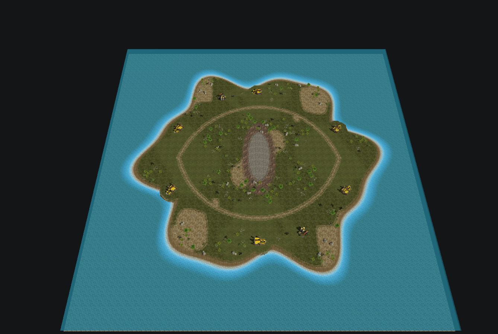
热带海岸 · 3D 总览320×320，可见六处矿点与两处油井，中央岩脊和两条陆路。观察玩法留白与整体尺度；构图仍较对称。
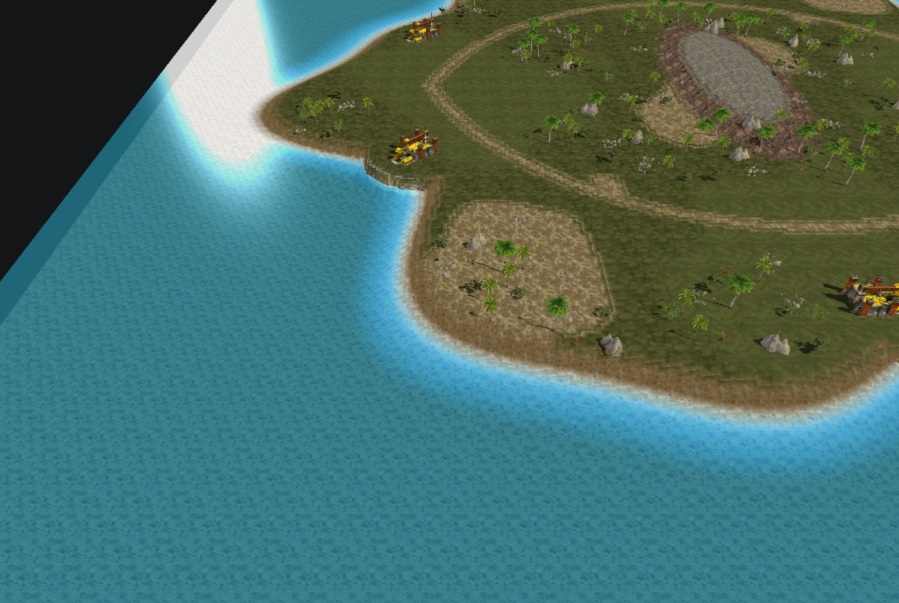
海岸局部 · 植被与过渡树、草与大小岩石成簇。岸线部分仍有台阶，应按区域检查并平滑，不能单凭全图成功判断好看。
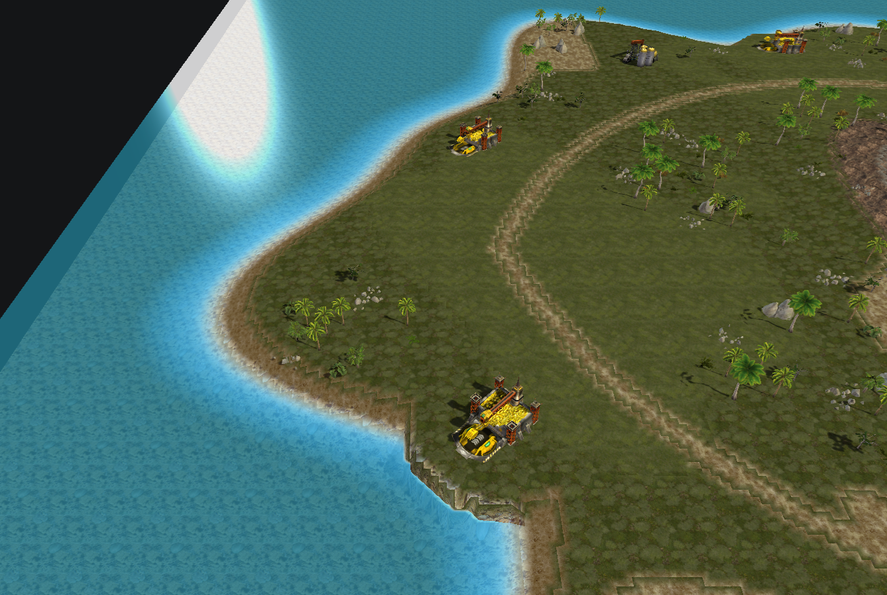
基地近景 · 留白展开与建造空间先预留，装饰集中在旁侧；不把树撒到基地中心。
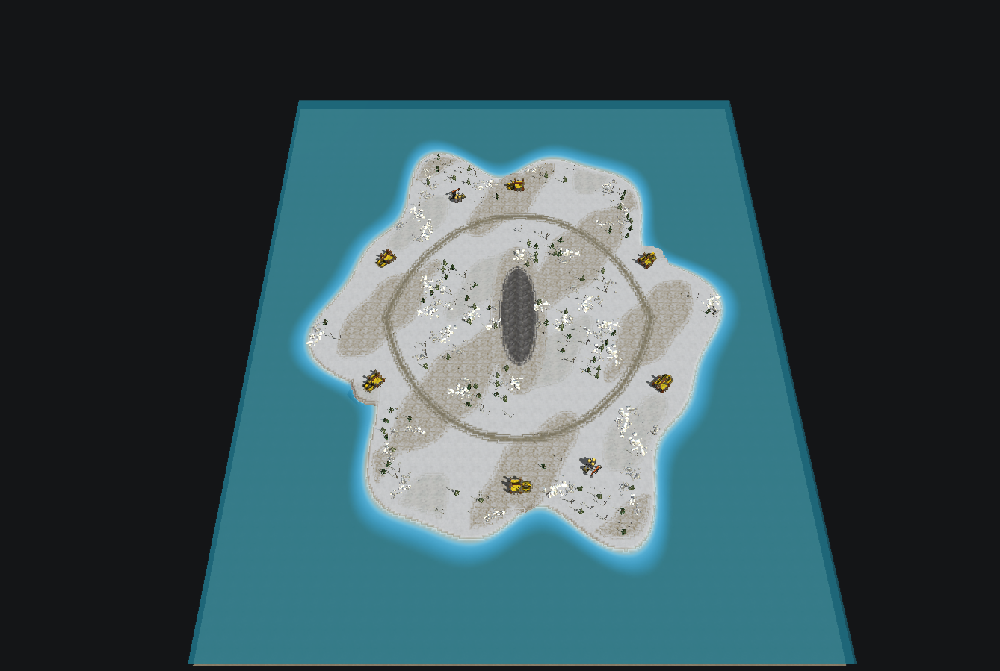
雪地版本 · 总览280×340，另一个种子与长宽。材质和植被与主题匹配，布局仍使用同一草稿框架，未代表不同玩法的泛化成绩。
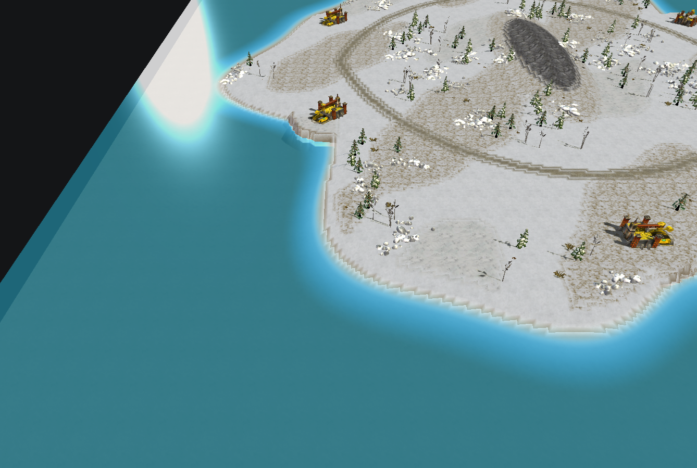
雪地局部 · 明度雪、岩石、树林和裸地的层次；检查白色物件是否与背景混在一起。
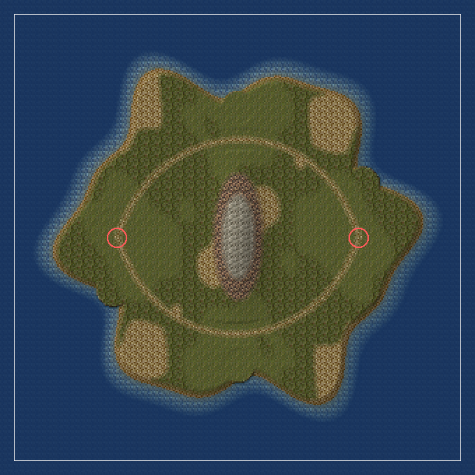
俯视诊断 · 结构先看路线、基地与海面分工。俯视的颜色与模型显示简化，不能代替 3D。
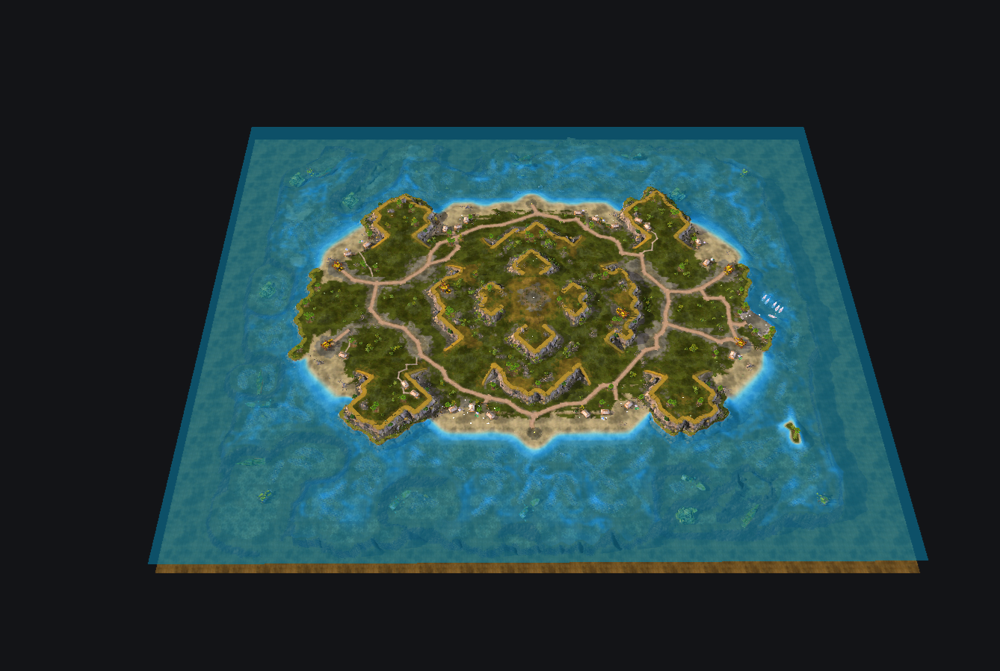
m001 · 自然主岛学习海岸、扩张平台、道路分级与自然地标，不复制整张图。
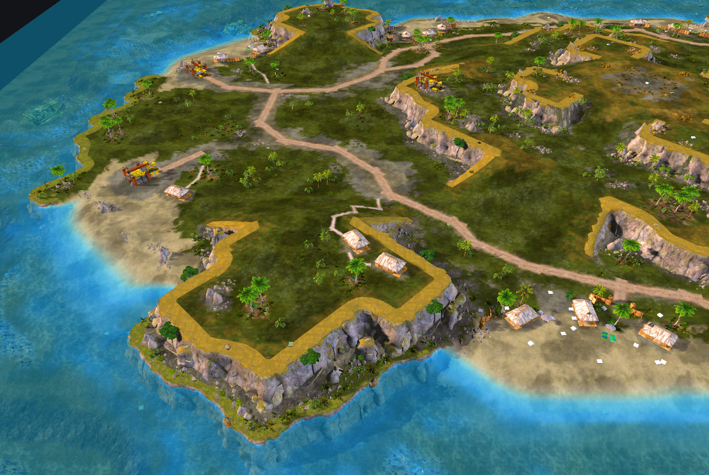
m001 · 自然局部观察道路旁的灌木、石头、植被的密度变化与空白。
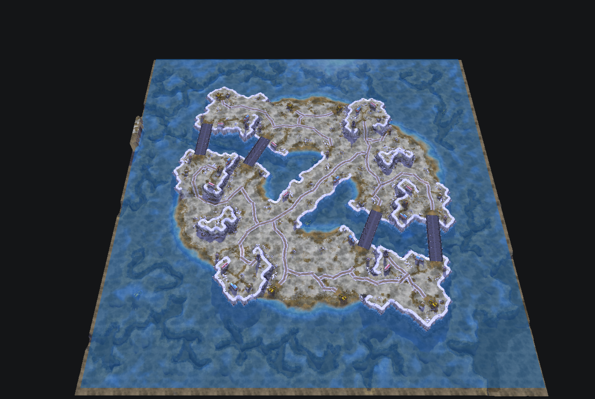
m005 · 雪地陆地与海床统计要分开看，不能把全图频率最高的沙纹理当作陆地主材质。
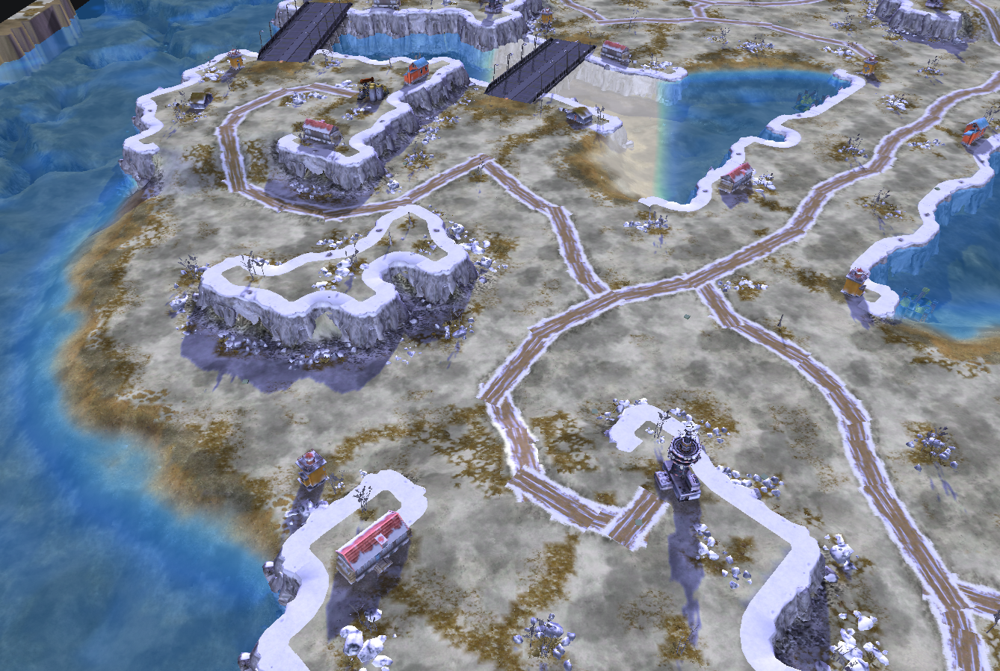
m005 · 近景雪色层次、林缘、岩壁尺度与通路组织。
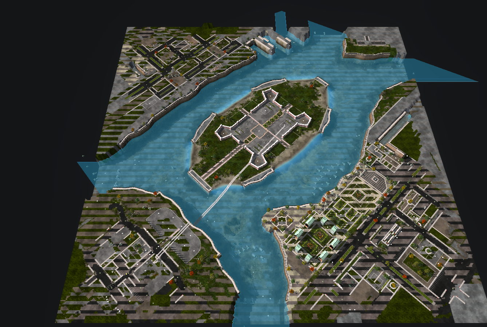
m058 · 运河结构任务图只学空间与美化。没有 OreNode，不能直接当遭遇战模板。
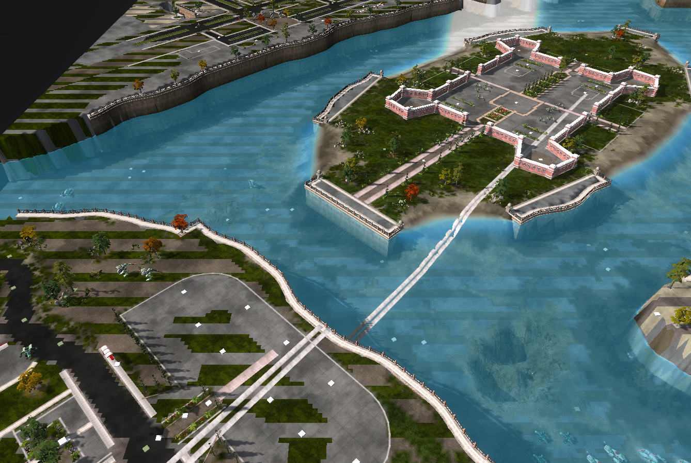
m058 · 街区参考观察建筑朝向、灯柱与围栏；当前地编预览有路面条带/缺口等瑕疵，不学习这些渲染缺陷。
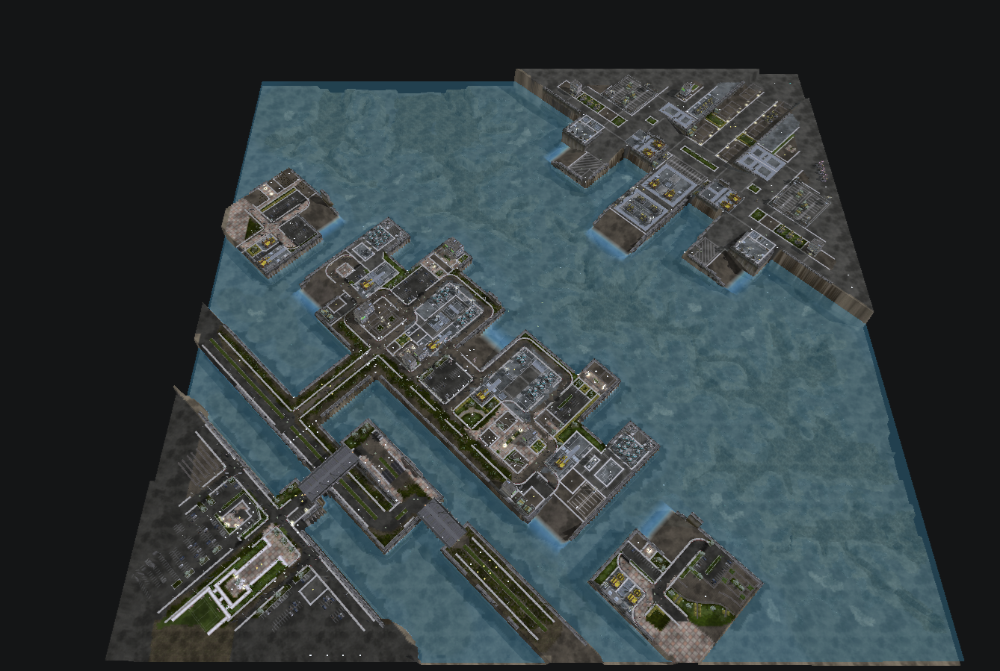
m067 · 日式港口码头、工业区与陆水关系；旧名称先查当前 MOD 和模型。
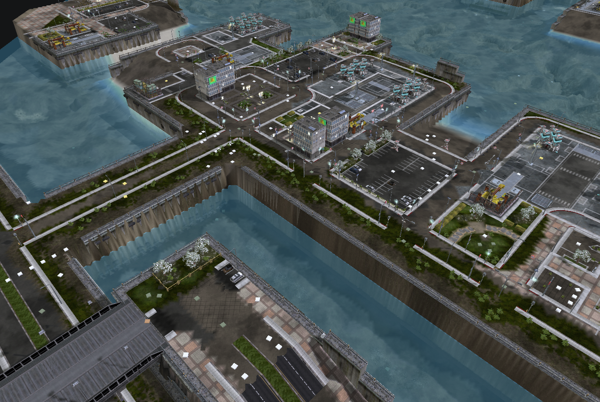
m067 · 港口局部以出入口、道路连接和建筑组的方向组织场景。当前预览的路面缺口和缺失旧物件不作为目标效果。
图片来自用户提供地图的地编预览，原作者未逐一核实。仅作为结构/制图参考，未认证游戏表现。
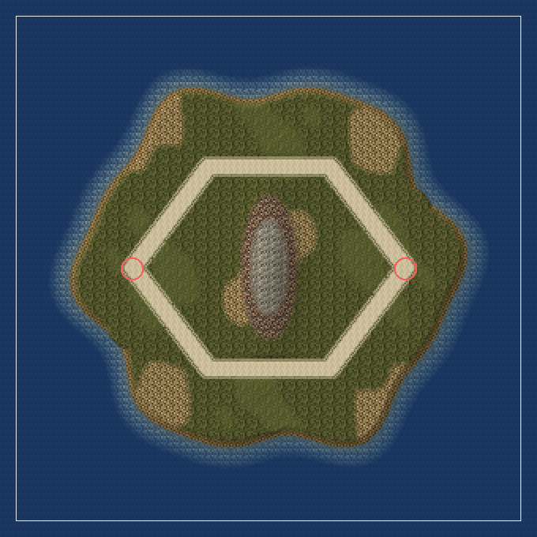
反例 · 初稿宽几何环路数据检查虽通过，画面像规则印章。需要视觉发现与修正，不能把成功回执当作品完成。
修正 · 曲线与材质缩窄保留玩法结构，调整曲线、收窄道路材质并增加成簇植被。仍应继续检查岸线与场景地标。
下一次审阅如何行动
记录位置/机位→具体缺陷→影响→最小修正；对 20×30 格等局部进行修改后重拍同机位。缺资源/解析器表现问题与地图设计问题分开记录。
Skill 主说明 · 验收标准 · 案例数据